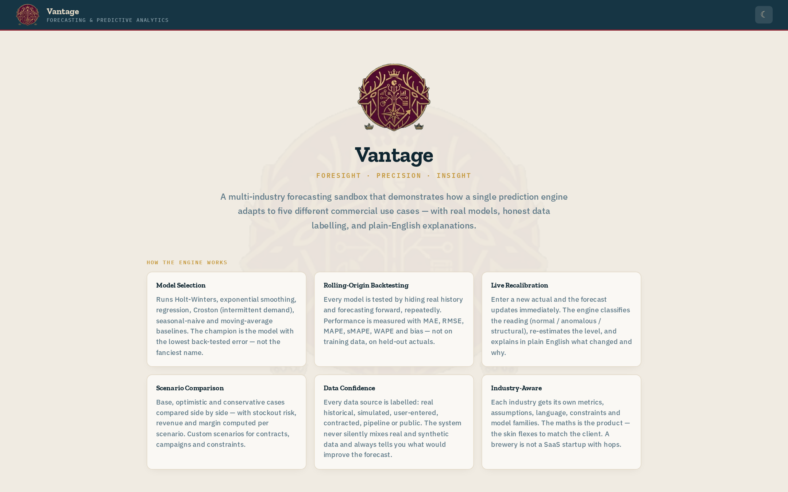

Vantage — Forecasting & Predictive Analytics
A dependency-free forecasting engine that shows its error before it shows its forecast — the discipline a regulated organisation should demand of any number it plans on.

01The problem
Organisations plan against demand they cannot see — stock, staffing, budgets, capacity — and the forecasts they plan on usually arrive as unexplained point estimates: no error history, no uncertainty band, no evidence the model beats a naive baseline on data it has never seen. In a regulated or funded environment, that is not a modelling quibble; it is a governance failure. A budget submitted to a board or funder, a capacity plan behind a service obligation, a threshold inside a monitoring system — each is a quantitative claim someone will eventually have to defend. The honest control question is always the same: how wrong has this method been, measured fairly, and does it beat the simple alternative? Most forecasting tools never make you ask it.
02What I built
Vantage is a self-contained, dependency-free forecasting engine wrapped in five industry skins — brewery, direct-to-consumer, education, manufacturing and SaaS — plus a free sandbox for your own numbers.
- The engine implements Holt-Winters, ETS, Croston (for intermittent demand), seasonal-naive and OLS regression, and selects the model per series by the lowest back-tested error on rolling origins — WAPE (the selection metric), with MAE, RMSE, MAPE and bias, all evaluated on data the model was not fitted to.
- Every forecast ships with an 80% prediction interval, and horizons are planned in operationally sensible weekly or monthly steps.
- The embedded version is the live app: the engine's real forecasts, charts and intervals are computed in the browser on a locally-vendored React 18 runtime, so it runs fully offline.
03The legal & regulatory reasoning
Vantage encodes a lawyer's scepticism about expert numbers. Rolling-origin back-testing is the fair trial: a model is judged only on observations it had not seen, repeatedly, from multiple starting points — the quantitative equivalent of testing a witness on facts they were not coached on. The seasonal-naive baseline keeps every claim falsifiable: if a sophisticated method cannot beat “same as last season”, the engine says so and uses the simpler model — accuracy is earned, never presumed. And prediction intervals replace false precision: a decision-maker is told the range the method actually supports, not a single confident number. This is the same posture a model-validation function, an auditor or a cross-examining counsel takes toward any quantitative evidence — documented method, measured error, honest uncertainty — built into the tool instead of bolted on after the challenge arrives.
04Why it matters to a regulated employer
Compliance functions run on models — transaction-monitoring thresholds, risk scores, screening calibrations — and much of the advisory work around them is deciding whether a number can be relied on and evidenced. Because I have built and back-tested an engine of my own, I know which questions actually bite when a vendor makes an accuracy claim — out-of-sample error, baseline comparison, bias, drift — and I can document model choices in a way a validator or supervisor can follow, then translate the output into decisions a board can defend. Vantage is the numeracy layer of the portfolio: proof the analytical judgement runs deeper than the legal vocabulary.